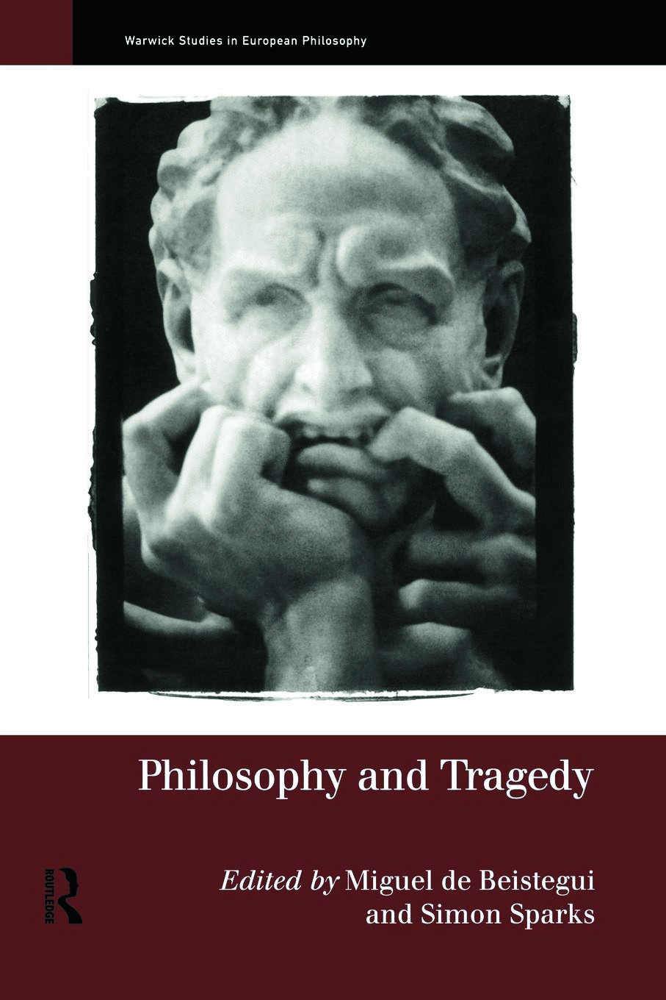
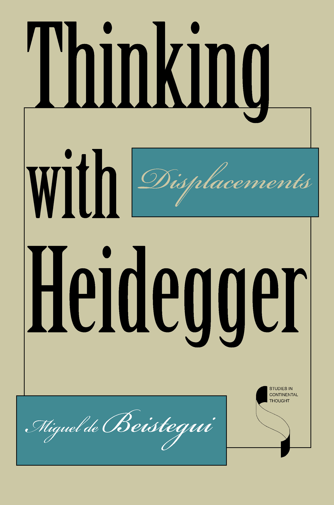
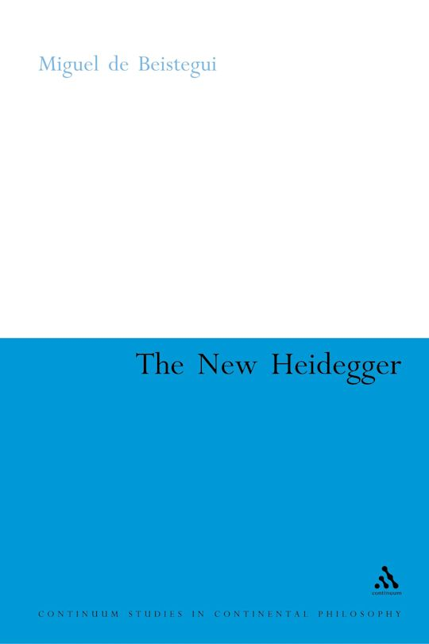
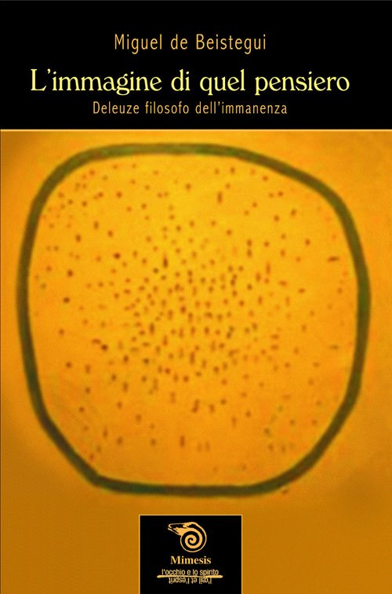
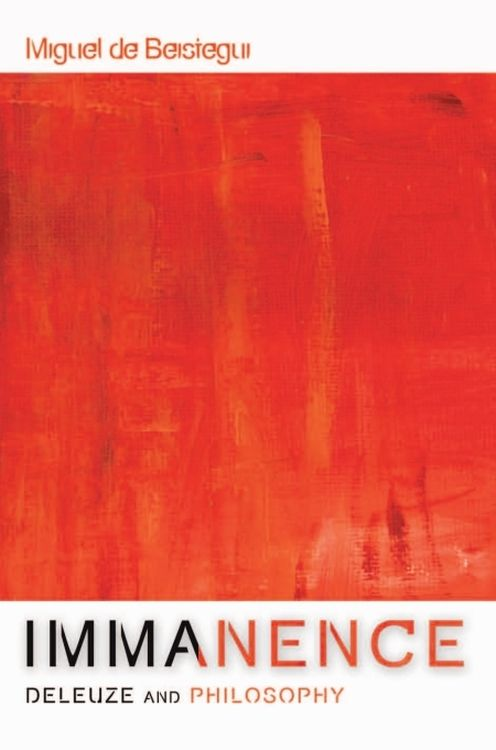
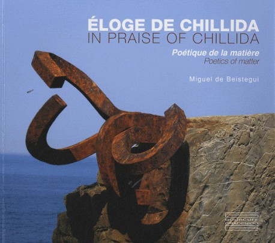
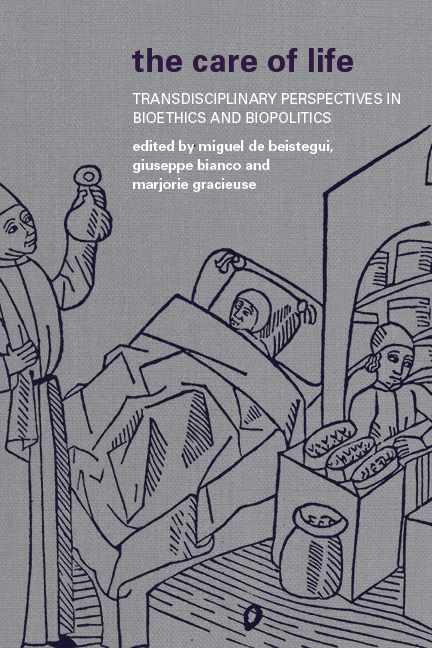
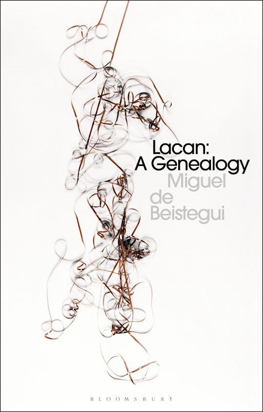

Miguel de Beistegui
Philosopher
Heidegger and the Political

Recent studies of Heidegger's involvement with National Socialism have often presented his philosophy as a forerunner to his political engagement. This has often occurred to the detriment of the highly complex nature of Heidegger's relation to the political. Heidegger and the Political redresses this imbalance and is one of the first books to critically assess Heidegger's relation to politics and his conception of the political.
The book shows why we must question the tendency to read the political directly into Heidegger, and instead examine how and why it is so often displaced in his writings. Exploring Heidegger's ontology—where politics appears only after a forgetting of Being—and his attempt to think a site more originary than politics, it considers how key motifs such as lost origins, Hölderlin’s poetry, technology, and the Greek polis illuminate his relation to the political.
It also confronts the risks implicit in Heidegger’s displacement of the political, opening onto a broader question: the risk inherent in thinking itself.
Philosophy and Tragedy

From Plato's Republic and Aristotle's Poetics to Nietzsche's The Birth of Tragedy, the theme of tragedy has been subject to radically conflicting philosophical interpretations. Despite being at the heart of philosophical debate from Ancient Greece to the Nineteenth Century, however, tragedy has yet to receive proper treatment as a philosophical tradition in its own right.
Philosophy and Tragedy contributes to that oversight and is the first book to address the topic in a major way. The five sections are organised clearly around five major philosophers: Hegel, Holderlin, Nietzsche, Heidegger, and Benjamin. Eleven new essays by internationally renowned philosophers show how time and again, major thinkers have returned to tragedy in many of their key works. Philosophy and Tragedy asks why it is that thinkers as far apart as Hegel and Benjamin should make tragedy such an important theme in their work, and why, after Kant, an important strand of philosophy should present itself tragically.
Thinking with Heidegger

Thinking with Heidegger looks into the essence of Heidegger's thought and engages the philosopher's transformative thinking with contemporary Western culture. Rather than isolate and explore a single theme or aspect of Heidegger, this book chooses multiple points of entry that unfold from the same question or idea. The author examines Heidegger's translations of Greek philosophy and his interpretations and displacements of anthropology, ethics and politics, science, and aesthetics. Thinking with Heidegger proposes answers to some of philosophy's most fundamental questions and extends Heideggerian discourse into philosophical regions not treated by Heidegger himself.
Truth and Genesis: Philosophy as Differential Ontology

This book considers the role and meaning of philosophy today. Calling for a new departure for philosophy, one that brings together philosophy's scattered identities, the author proposes a unified philosophy that would find itself equally at home in artistic and scientific disciplines. To build this renewed philosophy, Truth and Genesis turns to Aristotle and the earliest foundations of thought.
He traces philosophy's development through the medieval and modern periods before comparing and investigating the work of two of the 20th century's most influential thinkers, Martin Heidegger and Gilles Deleuze. In particular, this book focuses on Deleuze's Difference and Repetition and Heidegger's Contributions to Philosophy for their handling of the concept of difference. The author concludes that Deleuze and Heidegger are irreconcilable, but it is in their disagreements that he sees a way to liberate philosophy from its current crisis.
The New Heidegger

Martin Heidegger's work is pivotal in the history of modern European philosophy. The New Heidegger presents a comprehensive overview of, and introduction to, the work of one of the most influential and controversial philosophers of our time. Heidegger has had an extraordinary impact on contemporary philosophical and extra-philosophical life: on deconstruction, hermeneutics, ontology, technology and techno-science, art and architecture, politics, psychotherapy, and ecology.
The New Heidegger takes a thematic approach to Heidegger's work, covering not only the seminal Being and Time, but also Heidegger's lesser known works. Lively, clear and succinct, the book requires no prior knowledge of Heidegger and is an essential resource for anyone studying or teaching the work of this major modern philosopher.
L’immagine di quel pensiero

Cosa significa “pensare”? Quale immagine si sprigiona dal pensiero (filosofico, artistico o scientifico) non appena questo si sia liberato dalle forme della rappresentazione? A questa domanda, Deleuze ha tentato di dare una risposta: è dalla sua capacità di raggiungere l’immanenza e di neutralizzare le istanze di trascendenza incessantemente risorgenti che giudicheremo la salute e l’efficacia di un pensiero. Se l’immanenza si dimostra difficile da cogliere, e ancor più da definire, è perché bisogna innanzitutto farla. In questo saggio, ci proponiamo di seguire il percorso sinuoso di un’immanenza che si cerca e di un pensiero che si fa. Ci proponiamo di elevare l’immanenza a pietra angolare della filosofia.
Jouissance de Proust
Marcel Proust’s In Search of Lost Time has long fascinated philosophers for its complex accounts of time, personal identity and narrative, amongst many other themes. Jouissance de Proust: pour une esthétique de la métaphore is the first book to try and connect Proust’s implicit ontology of experience with the question of style, and of metaphor in particular.
The book begins with an observation: throughout In Search of Lost Time, the two main characters seem prone to chronic dissatisfaction in matters of love, friendship and even art. Reality always falls short of expectation. At the same time, the narrator experiences unexpected bouts of intense elation, the cause and meaning of which remain elusive. The author argues we should understand these experiences as acts of artistic creation, and that this is why Proust himself wrote that true life is the life of art.
The book goes on to explore the nature of these joyful and pleasurable experiences and the transformation required of art, and particularly literature, if it is to incorporate them. The conclusion shows that Proust revolutionises the idea of metaphor, extending beyond the confines of language to understand the nature of lived, bodily experience.
(*) Winner of the 2007 Proust Prize from the Cercle Littéraire Proustien de Cabourg-Balbec.
Immanence – Deleuze and Philosophy

Immanence – Deleuze and Philosophy identifies the original impetus and the driving force behind Deleuze’s philosophy as a whole and the many concepts it creates. It seeks to extract the inner consistency of Deleuze’s thought by returning to its source or to what, following Deleuze’s own vocabulary, it calls the event of that thought. The source of Deleuzian thought, the book argues, is immanence. In six chapters dealing with the status of thought itself, ontology, logic, ethics, and aesthetics, this book reveals the manner in which immanence is realised in each and every one of those classical domains of philosophy. Ultimately, it is argued, immanence turns out to be an infinite task, and transcendence the opposition with which philosophy will always need to reckon.
Éloge de Chillida / In Praise of Chillida

Bien qu’abstraite, l’œuvre de Chillida échappe au jeu de l’idéalisme pur et géométrique de l’abstraction formelle comme au matérialisme de l’abstraction brute. Elle ne vise ni une réalité stable et intemporelle surplombant la nature et son devenir, ni les profondeurs du chaos primitif. Elle trace plutôt une voie entre ces deux extrêmes et découvre un monde – celui-là même que nous habitons – étranger et familier à la fois, transformé et pourtant reconnaissable.
Although abstract, Chillida's work eschews both the pure, geometric idealism of formal abstraction and the materialism of raw abstraction. It does not seek to represent a stable, timeless reality that transcends nature and its evolution, nor does it delve into the depths of primitive chaos. Instead, it charts a path between these two extremes and discovers a world – the very one we inhabit – that is both foreign and familiar, transformed and yet recognisable.
Aesthetics After Metaphysics: From Mimesis to Metaphor

This book focuses on a dimension of art which the philosophical tradition (from Plato to Hegel and even Adorno) has consistently overlooked, such was its commitment – explicit or implicit – to mimesis and the metaphysics of truth it presupposes. The author refers to this dimension, which unfolds outside the space that stretches between the sensible and the supersensible – the space of metaphysics itself – as the hypersensible and shows how the operation of art to which it corresponds is best described as metaphorical. The movement of the book, then, is from the classical or metaphysical aesthetics of mimesis (Part One) to the aesthetics of the hypersensible and metaphor (Part Two). Against much of the history of aesthetics and the metaphysical discourse on art, this book argues that the philosophical value of art doesn’t consist in its ability to bridge the space between the sensible and the supersensible, or the image and the Idea, and reveal the sensible as proto-conceptual, but to open up a different sense of the sensible. His aim, then, is to shift the place and role that philosophy attributes to art.
The Care of Life: Transdisciplinary Perspectives in Bioethics and Biopolitics

This interdisciplinary collection of essays demonstrates how the ethical and political problems we are confronted with today have come to focus largely on life. The contributors to this volume define and assess the specific meaning of life itself. It is only by doing so that we can understand why life has become an all-encompassing problem, why all questions, especially ethical and political, have become vital questions. We have reached a moment in history where every distinction and opposition is no longer in relation to life, but within it, and where life is at once a theoretical and practical problem. This book throws light on this nexus of problems at the heart of contemporary debates in bioethics and biopolitics. It helps us understand why and how life is understood, valued, cared for and framed today. Taking a genuinely transdisciplinary approach, these essays demonstrate how life is a multifaceted problem and how diverse the origins, foundations and also consequences of bioethics and biopolitics therefore are.
The Government of Desire: A Genealogy of the Liberal Subject

This book argues that Liberalism is best described as a technique of government directed towards the self, with desire as its central mechanism. Whether as economic interest, sexual drive, or the basic longing for recognition, desire is accepted as a core component of our modern self-identities, and something we ought to cultivate. But this has not been true in all times and all places. For centuries, as far back as late antiquity and early Christianity, philosophers believed that desire was an impulse that needed to be suppressed in order for the good life, whether personal or collective, ethical or political, to flourish. Though we now take it for granted, desire as a constitutive dimension of human nature and a positive force required a radical transformation, which coincided with the emergence of liberalism. By critically exploring Foucault’s claim that Western civilization is a civilization of desire, the author crafts a genealogy of this shift in thinking. This book shows how the relationship between identity, desire, and government has been harnessed and transformed in the modern world, shaping our relations with others and ourselves, and establishing desire as an essential driving force for the constitution of a new and better social order. But is it? The Government of Desire argues that this is precisely what a contemporary politics of resistance must seek to overcome. By questioning the supposed universality of a politics based on recognition and the economic satisfaction of desire, this book raises the crucial question of how we can manage to be less governed today, and explores contemporary forms of counter-conduct.
Lacan: A Genealogy

Lacan: A Genealogy provides a genealogical account of Lacan's work as a whole, from his early writings on paranoid psychosis to his later work on the real and surplus enjoyment. This book argues that Lacan's work requires an in-depth genealogy to chart and interpret his key concept of desire. The genealogy is both a historical and critical approach, inspired by Foucault, which consists in asking how – that is, by what theoretical and practical transformations, by the emergence of which discourses of truth, which institutions, and which power relations – our current subjectivity was shaped. Desire is a crucial thread throughout because it lies at the heart not only of liberal political economy, psychiatry and psychopathology, and the various discourses of recognition (from philosophy to psychology and the law) that shape our current politics of identity, but also, and more importantly, of the manner in which we understand, experience and indeed govern ourselves, ethically and politically. This book presents a novel reading of Lacan that foregrounds the radicality and urgency of his concepts and the relationship between desire, norm and the law.
L’élan du désir: Pour une éthique de la volupté

Cet essai trouve sa source dans une idée élémentaire – si simple, pensera-t-on, qu’elle coule de source : quoique distinct du besoin, le désir est vital. Dès lors qu’il s’agit de la vie humaine, et de ce que vivre signifie pour nous, il doit être question du désir. Non au sens d’un simple « instinct » par lequel nous nous efforcerions de conserver notre être, et encore moins, comme la psychanalyse, comme une « pulsion de mort », mais comme la tendance profonde de celle-ci à se dépasser. Le désir est élan et source de vie, et la vie jaillit (et jouit) d’être désir. Il est l’expression même de l’élan de la vie, de son intensité immanente qui déborde vers différents horizons – la pensée, l’art, l’amour, l’amitié, la politique parfois – où se joue le bonheur humain.
Thought Under Threat: Superstition, Spite and Stupidity
Thought under Threat is an attempt to understand the tendencies that threaten thinking from within. These tendencies have always existed, but today they are on the rise and frequently encouraged, even in our democracies. People “disagree” with science and distrust experts. Political leaders appeal to the hearts and guts of “the people,” rather than their critical faculties. Stupidity has become a right, if not a badge of honor; superstition is on the rise; and spite is a major political force. Thinking is considered “elitist.” The author argues that stupidity should be understood not as a lack of intelligence or judgment, but as the tendency to raise false problems and trivial questions. Similarly, spite is a poison that blurs and distorts critical faculties, and superstition neutralizes the ability to think independently. Thought under Threat shows how training thought itself can counter these vices, lead to productive deliberation, and ultimately create a thinking community.
Crisis: A Critique

Crises abound. The 'end of history' in the form of the triumph of liberalism has given way to a proliferation of crises internal to liberal, and especially neoliberal democracies: our economies and ecosystems, democracies, social and labour relations, constitutions, cultures, identities, and bodies are subjected to repeated and increasingly severe shocks. The vocabulary of crisis is ubiquitous, but often overused or emptied of meaning. Crisis: A Critique presents crisis as a construction through which we understand, experience and order the world; as a discursive event, producing a range of effects. Drawing on examples from economics, social movements, pandemics, genocides, ecological devastation, and discourses from law to political economy and eco-criticism, this work engages with authors who have questioned the connection between crisis and critique. It aims to recalibrate our language and thought for an age of seemingly unrelenting catastrophe.